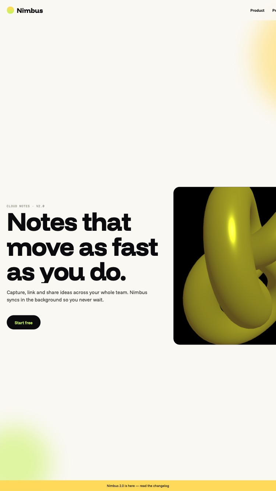
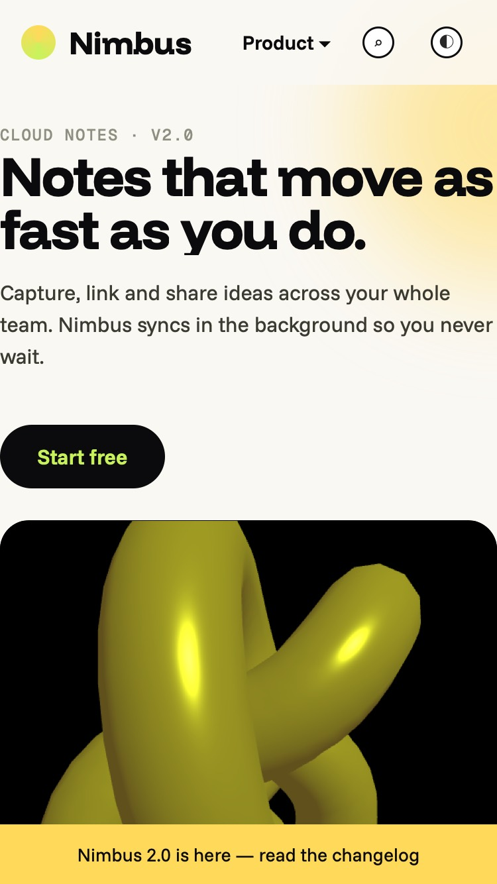
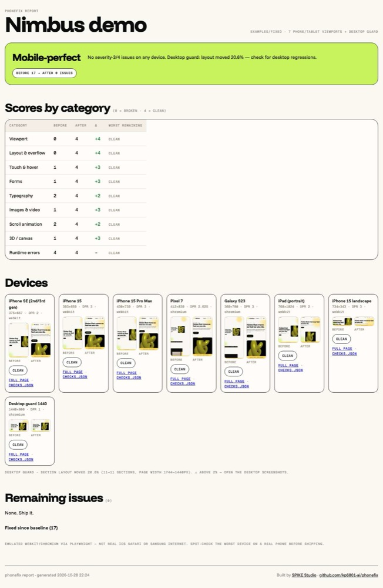

Your AI wrote the site at 1440px. phonefix audits it on seven real phone and tablet viewports, fixes every element that breaks (layout, touch, forms, video, scroll animation, 3D) and proves it with before and after screenshots.
npx skills add kp6801-ai/phonefix

Demo: our own site, spikestudiodxb.com, on a 3D MacBook and a 3D iPhone 15 Pro, each screen a native recording of the page mapped onto the model. Zero severity-4 issues on every phone. Play the live demo for the bundled before and after example pages.
npx skills add kp6801-ai/phonefixThe skills CLI installs into whichever agents it finds. Then say: “make this mobile-perfect”.
npx skills add kp6801-ai/phonefix -a claude-code
# or, no CLI:
git clone https://github.com/kp6801-ai/phonefix ~/.claude/skills/phonefixShows up as the phonefix skill. Triggers on “mobile”, “responsive”, “breaks on my phone”.
curl -fsSL https://raw.githubusercontent.com/kp6801-ai/phonefix/main/skills/phonefix/scripts/install.sh | sh -s -- --agent cursorWrites .cursor/rules/phonefix.mdc and copies the skill into .phonefix/.
curl -fsSL https://raw.githubusercontent.com/kp6801-ai/phonefix/main/skills/phonefix/scripts/install.sh | sh -s -- --agent codexAppends a 14-line block to AGENTS.md between markers. Your existing rules stay.
curl -fsSL https://raw.githubusercontent.com/kp6801-ai/phonefix/main/skills/phonefix/scripts/install.sh | sh -s -- --agent windsurfAppends to .windsurfrules.
curl -fsSL https://raw.githubusercontent.com/kp6801-ai/phonefix/main/skills/phonefix/scripts/install.sh | sh -s -- --agent copilotAppends to .github/copilot-instructions.md.
curl -fsSL https://raw.githubusercontent.com/kp6801-ai/phonefix/main/skills/phonefix/scripts/install.sh | sh -s -- --agent geminiAppends to GEMINI.md with an @import of the skill.
Playwright once per machine: npx playwright install chromium webkit. Or run --agent all and cover every agent in one go.
WebKit for the iPhones and iPad, Chromium for Android. Each device gets screenshots at 0, 25, 50, 75 and 100 percent scroll so pinned sections and scroll-driven animation actually run, plus a full-page shot and a checks.json. Emulation is not a real phone: the report says which device to spot-check by hand.
Detects the framework, Tailwind, GSAP, ScrollTrigger, Lenis, Three.js, R3F and where the viewport meta lives. Offline, nothing installed.
Git checkpoint, then captures every route on every device. Severity-4 means the page breaks on a phone.
Scores nine categories 0 to 4, then the agent opens the two smallest-device screenshots. Eyes catch what the DOM cannot prove.
Ordered rules, root cause first. Never hides overflow, never disables zoom, never deletes an animation, never changes the desktop design.
Captures again and builds the report: verdict, score deltas, before/after grid, remaining issues with reasons, desktop drift.

No. Fixed widths become fluid (min(1200px, 100%)), hover effects stay for mice, animations get a mobile branch. A 1440px desktop guard capture measures section drift before and after; over two percent and the report tells the agent to look.
Yes. The references tell the agent where the viewport meta lives in each, how Tailwind’s mobile-first prefixes work, how to keep Three.js client-only, and how to revert GSAP with useGSAP. The scripts just need a URL or a static folder.
It is Playwright’s WebKit and Chromium with device viewports, DPR, touch and user agents. Good enough to catch everything structural. The URL-bar collapse, the real keyboard and GPU limits differ on hardware, so the report names the worst device for a hand check.
Yes. detect.mjs, capture.mjs and report.mjs are plain Node scripts. checks.js can be pasted into DevTools. The agent is what applies the fixes.
SPIKE Studio in Dubai. We build sites, systems and content for small businesses, and we got tired of AI-generated pages that fall apart on the phone every customer actually uses.